excel
- excel注意总结：
-
合并单元格方法一：选中需要合并的单元格——单击对齐方式对话框启动器——在对齐栏里勾选合并单元格——最后单击确定(该方法适合合并单元格后，非文本居中对齐)
图例：
方法二：(如果合并单元格后，要求文本居中对齐建议使用该方法)：选中需要的单元格后，单击【合并后居中】组
-
文本对齐方式：方法一选中需要的文本——开始选项卡——对齐方式模块中(具体对齐方式，鼠标悬停对应位置，会显示)
图例：
方法二:选中需要的文本——开始选项卡——对齐方式对话框启动器——对齐栏——文本对齐方式区域——按要求设置即可——最后单击确定
-
SUM家族(求和)【函数
SUM、SUMIF、SUMIFS】(建议先了解该知识):选中求和输出结果的单元格——公式选项卡——自动求和组——拖动鼠标选中需要求和的参数——最后按回车-
SUM
求和【就是将所选范围内的数字相加】——因为是数字求和，所以空单元格、字符串、逻辑值不会进入求和计算
语法：
=SUM(范围) -
SUMIF
单条件求和【就是将所选范围内符合条件的数字相加】——因为是数字求和，所以空单元格、字符串、逻辑值不会进入求和计算(需要求和的数字范围放在最后面)
语法：
=SUMIF(条件范围,条件,数字范围) -
SUMIFS
多条件求和【就是将所选范围内符合所有条件的数字相加】——因为是数字求和，所以空单元格、字符串、逻辑值不会进入求和计算(需要求和的数字范围放在最前面)
语法：
=SUMIFS(数字范围,条件范围1,条件1,条件范围2,条件2,条件范围3,.....)
视频：若记得函数SUM，可以直接输入公式，然后拖动鼠标选中需要的参数——最后按回车
-
-
设置单元格数据格式：选中单元格——鼠标右键——选择设置单元格格式——在分类选择规定的格式即可


-
AVERAGE家族(平均值)【函数
AVERAGE、AVERAGEA、AVERAGEIF、AVERAGEIFS】(建议先了解该知识):选中求平均值输出结果的单元格——公式选项卡——插入函数组——搜索需要的AVERAGE家族——在弹出的对话框——依次选择对应的参数——最后单击确定-
AVERAGE
数字平均值【平均值=参与计算的数字总和/数字单元格个数】——因为是数据的总和，所以空单元格和字符串(文本)不会在平均值计算内
语法：
=AVERAGE(平均值参数范围) -
AVERAGEA
所选范围内非空单元格的平均值——文本和逻辑值(TRUE，FALSE)转换后计入平均值计算内(文本转为0，TRUE转为1,FALSE转为0)
语法：
=AVERAGEA(平均值参数范围) -
AVERAGEIF
单条件求平均值【可选定一个条件】——只计算符合条件的数字平均值(需要注意的是：平均值参数范围始终在最后面)
语法：
=AVERAGEIF(范围1,条件1,平均值参数范围) -
AVERAGEIFS
多条件平均值【可选择多个条件】——只计算符合所有条件的数字平均值((需要注意的是：平均值参数范围始终在最前面))
语法：
=AVERAGEIFS(平均值参数范围,范围1,条件1,范围2,条件2,范围3,.....) -
注意：
- AVERAGEIF、AVERAGEIFS只能在计算的平均值数字在一列使用
视频：若记得函数AVERAGE，可以直接输入公式，然后拖动鼠标选中需要的参数——最后按回车
-
-
COUNT家族【函数
COUNT、COUNTA、COUNTBLANK、COUNTIF、COUNTIFS】:选中条件计数输出结果的单元格——公式选项卡——插入函数组——搜索需要的函数——确定弹出对话框——依次输入正确的参数——单击确定-
COUNT
数字统计【就是数选定区域有多少单元格】——注意：只能是数字格式，不能是文本/字符串
语法：
=COUNT(范围) -
COUNTA
非空单元格统计 【就是数选定区域有多少有内容的单元格】——注意：可以是字符串/文本，因为只认单元内有内容
语法：
=COUNTA(范围) -
COUNTBLANK
空单元格统计 【统计选定区域中空白单元格的数量】注意：只统计真正空白的单元格，单元格内不能有任何内容（包括空格）。
语法：
=COUNTBLANK(范围) -
COUNTIF
单条件统计【可以选定一个条件】——注意：只统计符合条件的单元格数量
语法：
=COUNTIF(范围,条件) -
COUNTIFS
多条件统计【可以选定多个条件】——注意：只统计符合条件的单元格数量
语法：
=COUNTIFS(范围1,条件1,范围2,条件2,范围3,......)
视频：
提升参数输入效率：若记得函数，可以直接输入公式，然后拖动鼠标选中需要的参数——最后按回车(但是不建议用)
-
-
条件格式：选中需要条件格式设置的单元格(地址)——开始选项卡——样式组——条件格式下拉菜单——单击新建规则选项——在弹出的对话框按照题目要求定义规则——最后单击确定即可
平均值会依靠所选的单元格地址范围自动计算
-
插入图表：选中题目要求的单元格范围(按住CTRL键可以连续选择不相邻的单元格范围)——插入选项卡——单击图表对话框启动器——在弹出的对话框选择所有图表
——按题目要求选择图表即可
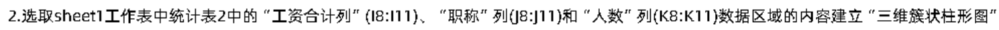
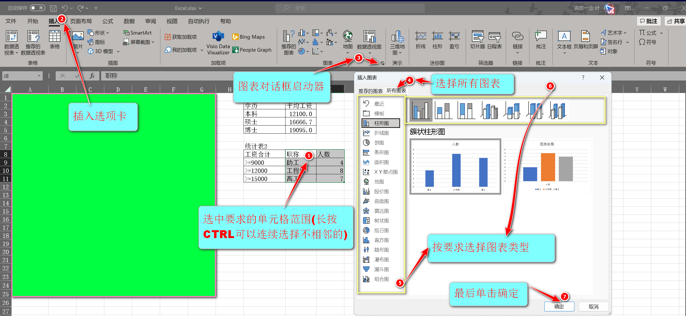
插入选项卡案例一 -
添加图表元素：选中需要编辑的图表——图表设计选项卡(插入图表后，并编辑图表时出现)——图表元素组——添加图表元素
【添加图表元素】功能很强大可以：
- 指定坐标轴位置
- 指定坐标轴标题
- 图表标题位置
- 数据标签是否显示
- 是否显示图例标识
- 设置误差线
- 网格线
- 图例
- 线条
- 趋势线
- 涨/跌柱线
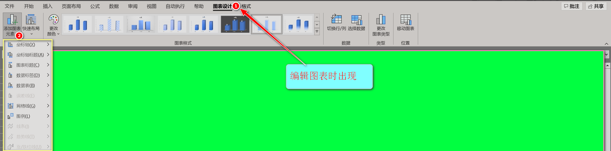
插入选项卡案例一 -
图表样式：选中需要编辑的图表——图表设计选项卡——图表样式组下拉菜单——选择要求的图表样式即可
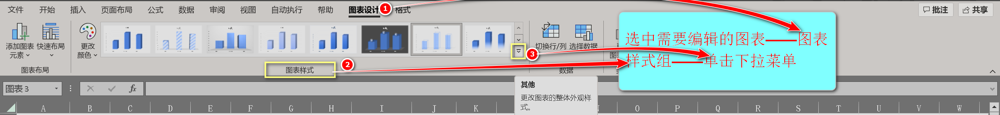
插入选项卡案例一 -
设置图表区格式：选中需要编辑的图表——格式选项卡(只有当图表进行编辑时，出现)——【当所选内容组】——单击【设置所选内容格式】——在弹出的侧边栏里按题目要求设置格式
因为是设置所选内容格式，所以具体设置格式的地方与自己选择的内容相关，可以是表标题、整张图表……
方法二：鼠标左键双击选中的区域，打开对应区域的设置格式的侧边栏
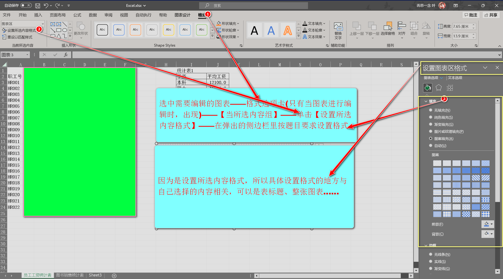
-
更改工作表的名称：方法一：在需要重命名的工作表——双击工作表标签——按要求重命名即可——最后回车【非常快(配合复制的要求名称，只需要一秒就可以完成)】
方法二：在需要重命名的工作表——右击工作表标签——在弹出的侧边栏选择重命名——按要求重命名即可——最后回车
方法三：在需要重命名的工作表——快捷键【Alt+H+O+R】——按要求重命名即可——最后回车
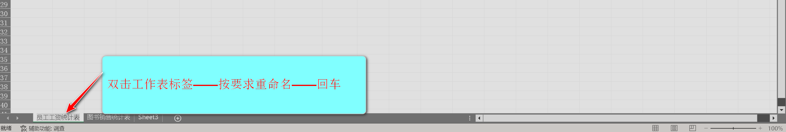
-
排序：选中需要排序的单元格地址(范围)——数据选项卡——排序和筛选组——单击排序——在弹出的对话框——勾选数据包含标题——最后按照要求依次定义主要关键字与次要关键字，以及它们分别的排序(升序或降序)——最后单击确定
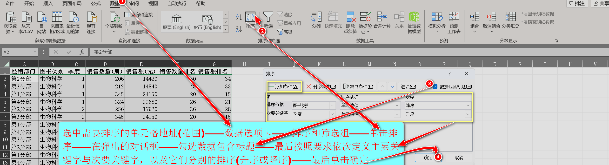
-
筛选:
具体分为普通筛选与高级筛选
-
普通筛选
步骤：选中需要筛选的工作表的标题——数据选项卡——排序和筛选组——单击筛选——在标题出现的下拉菜单按要求设置参数即可
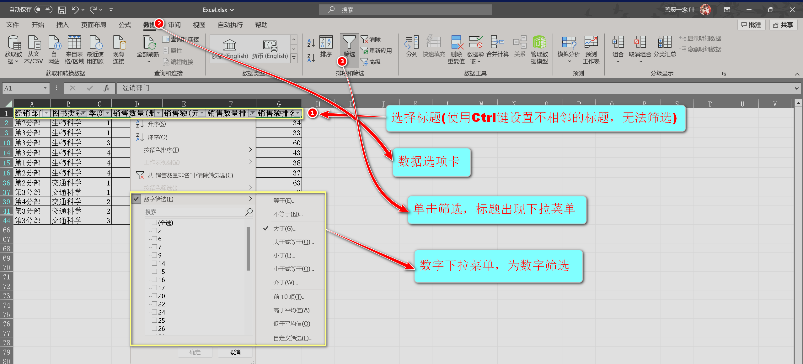
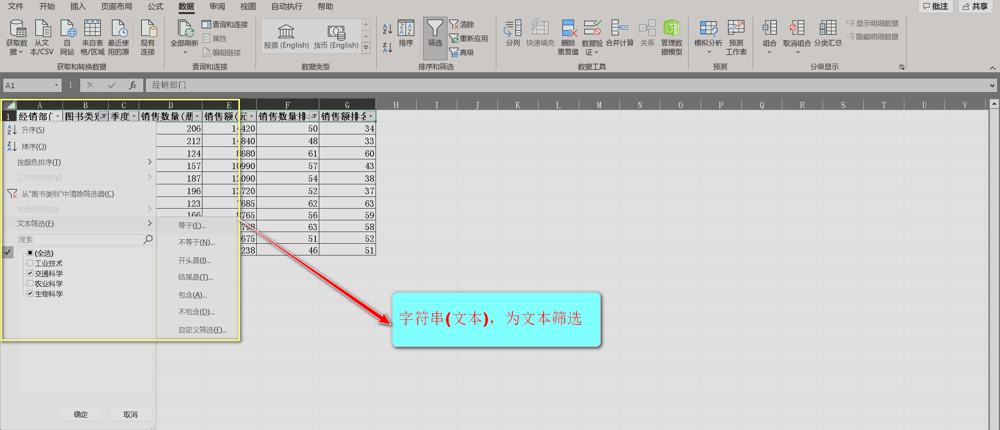
-
高级筛选
- 与普通筛选不同，高级筛选需要自己在单元格填入条件
- 考试流程：会先让你往上插入几行，然后输入对应条件
- 规则：一行规则对应一列，同行为与，同列为或（理解为不同行即可）
- 与是要同时成立，才能筛选
- 或是满足其中一个条件，就能进行筛选
-
分类汇总：选中需要的单元格地址——数据选项卡——单击分级显示组的分类汇总选项——在弹出的对话框——按题目要求设置参数——最后单击确定
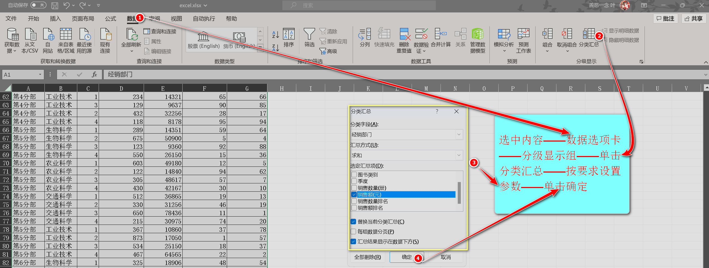
-
-
加权平均：审题+套公式
加权平均= (数值1 * 权重1 + 数值2 * 权重2 +.....)/(权重1+权重2+权重3+........)·加权平均：指的是每个数的重要性不一样。所以不能直接相加除以个数。 ·正确算法：先让每个数乘上它的重要性比重（权重），把结果加起来，最后再除以权重的总和。
·例子1：平均值(百分比计算)、 ·例子2：
科目期末成绩= 平时分* 平时分权重 + 考试分 * 考试分权重 所以总期末成绩平均值=所有科目期末成绩/科目个数 在这里面，平均值不是简单的数值相加/相加的个数，而是要先计算权重后，再相加，最后除以个数
·例子3： 考试得分：最终成绩 = 平时分×20% + 考试分×80% 平均分计算：全校平均分 = (一班平均分×一班人数 + 二班平均分×二班人数) ÷ (一班人数 + 二班人数) -
IF家族【
IF、IFS、IFERROR】选中条件输出结果的单元格——公式选项卡——插入函数组——搜索需要的函数——确定弹出对话框——依次输入正确的参数——单击确定-
IF
IF【条件函数——分Ture、FALSE二值内容输出，当指定的参数符合对应法则的时候，输出Ture内容，不符合则相反，输出FALSE内容】
·语法：它可以是单条件
=IF(条件,ture,FALSE)
·也可以是多条件=IF(条件,ture,IF(条件,ture,IF(条件,ture,IF(.....)
·但是注意：不是没有FALSE，嵌套的IF就是FALSE,只有当上一个IF条件不符合对应法则，才会继续向嵌套IF进行条件判断知道后面嵌套的IF输出的值为ture停止
·这种写法好处是：所有版本都能使用，但是当嵌套的越多，越复杂，所以如果能用IFS就不要使用IF嵌套带到多条件判断的目的
·嵌套了几个IF就要在结尾放入对应的右括号 -
IFS
IFS【多条件函数——与IF嵌套相近，但是更直观，多条件非常建议】
语法：
=IFS(条件1,条件1的TRUE,条件2,条件2的TRUE,.....TRUE,TRUE条件)·从语法可以看出：IFS可以多条件同时定义，同样是是从条件1开始往后依次判断，知道有条件符合对应法则停止，并输出对应的TURE值 ·
至于最后单独的TRUE则是否则的意思(不一定要写)，当所有条件均不符合的时候，输出TRUE的条件。 -
IFERROR
它是excel里的错误处理函数。
语法：
=IFERROR(值，错误时返回的值)只是简单的概括一下，一级一般不会考
-
-
ROUND家族(数值修约类)【
ROUND、ROUNDUP、ROUNDDOWN、INT、TRUNC】选中输出结果的单元格——公式选项卡——插入函数组——搜索需要的函数——确定弹出对话框——依次输入正确的参数——单击确定ROUND家族有两种使用场景：
-
单独使用
- 直接对数值进行舍入（四舍五入、向上取整、向下截断等）
- 语法核心：
=函数名(数字, 小数位数) - “小数位数”可以是正数（保留小数）、0（取整）、负数（整十整百）
-
嵌套在其他函数中使用
- 常用于 IF、VLOOKUP、SUM 等函数中，避免浮点误差或满足精度要求
- 示例：
=IF(ROUND(A1,2)>=60, "及格", "不及格") - 注意：如果只是改显示格式，用“设置单元格格式”，别用 ROUND（它会改真实值）
ROUND家族各函数详解（重点理解“小数位数”参数）：
-
ROUND（四舍五入）
- 语法：
=ROUND(数字, 小数位数) - 规则：看保留位的下一位，≤4舍弃，≥5进位
- 小数位数=2 → 保留两位小数（如 3.1415 → 3.14）
- 小数位数=0 → 取整（如 3.1415 → 3）
- 小数位数=-1 → 四舍五入到十位（如 345 → 350）
- 语法：
-
ROUNDUP（向上舍入）
- 语法：
=ROUNDUP(数字, 小数位数) - 规则：只要指定位数后面有数字，就向前进位（远离0的方向）
- 示例：
=ROUNDUP(3.1415, 2)→ 3.15（不管第3位是1还是9，都进位） - 负数位数同理：
=ROUNDUP(345, -1)→ 350
- 语法：
-
ROUNDDOWN（向下舍入）
- 语法：
=ROUNDDOWN(数字, 小数位数) - 规则：直接截掉指定位数后面的数字，不进位（朝向0的方向）
- 示例：
=ROUNDDOWN(3.1415, 2)→ 3.14 - 负数位数：
=ROUNDDOWN(345, -1)→ 340
- 语法：
-
INT（向下取整）
- 语法：
=INT(数字)（只能取整，不能指定小数位数） - 规则：取小于等于原数的最大整数（往数轴左边走）
- 正数：直接去掉小数（3.9 → 3）
- 负数：取更小的整数（-3.1 → -4，因为 -4 < -3.1）
- 区别点：INT 在负数时“向下”的方向是变小，而 ROUNDDOWN 是靠近0，所以结果不同
- 语法：
-
TRUNC（截断小数）
- 语法：
=TRUNC(数字, [小数位数])（省略小数位数默认为0） - 规则：直接砍掉指定位数后面的数字，不四舍五入，也不管正负
- 正数：3.1415 → 3.14（小数位数2）
- 负数：-3.1415 → -3.14（小数位数2），-3.9 → -3（小数位数0）
- 和 ROUNDDOWN 的区别：TRUNC 只是截断，ROUNDDOWN 是“朝0舍入”，结果一样，但逻辑不同
- 语法：
📌 核心总结：
· 小数位数是关键：正数→小数位，0→个位，负数→十/百/千位。
· 正数时：INT = TRUNC = ROUNDDOWN(0) 结果一样。
· 负数时：INT 取更小的整数（-3.1→-4），TRUNC 和 ROUNDDOWN 取靠近0的整数（-3.1→-3）。
· ROUNDUP/ROUNDDOWN 是方向性舍入，INT/TRUNC 是取整/截断，各有用处。 -
-
插入数据透视表：选中需要透视的区域——插入选项卡——表格组——数据透视表下拉菜单(或直接单击)——
按要求是选择新工作表或现有工作表——单击确定——在右侧边栏按要求进行操作(添加字段、将字段拖动到指定位置)——
最后单击右上角的X号或单击任意空单元格，退出数据透视表编辑状态即可
注意：
- 字段：指的是数据透视表中数据源的列标题，每个字段在字段列表中唯一
- 右侧边栏，勾选的字段:筛选、行、列、值是可以拖动的，必要时可以采取拖动的方式，达到要求的区域
- 看清楚是：新建表格插入，还是现有表格插入
- 现有表格插入，一般要求指定位置，记得按要求调整位置
- 新建表格插入：如果创建时选错区域，直接回车不会显示数据，需检查新工作表是否已生成空白透视表。
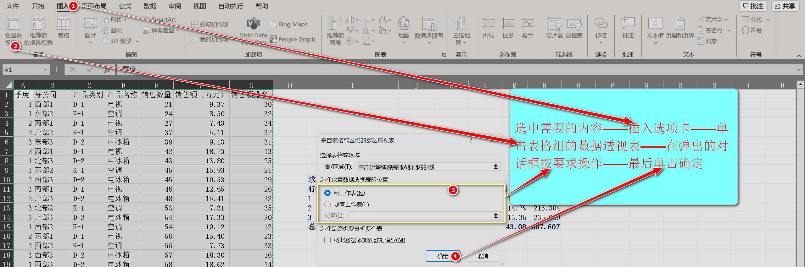
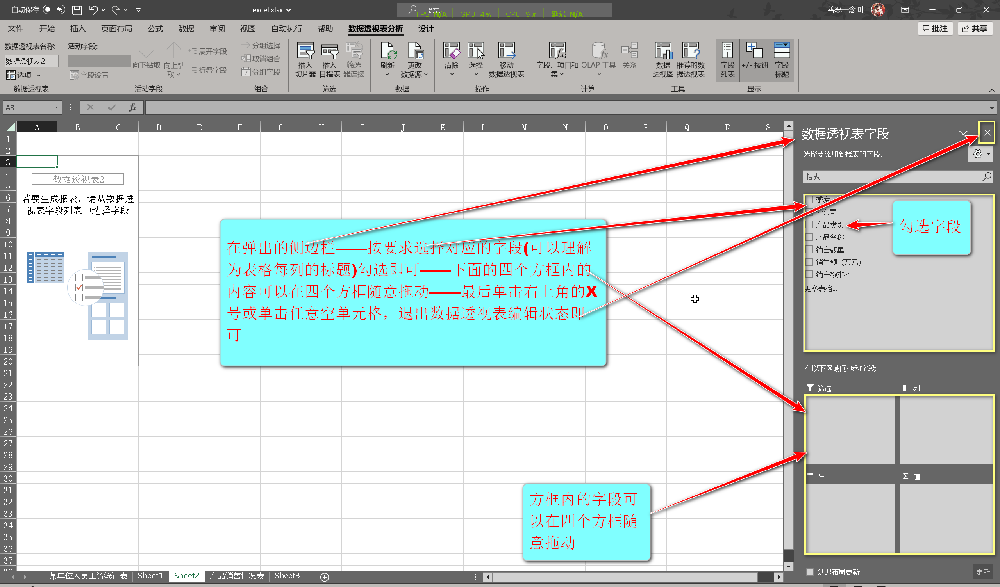
-
查找家族【
VLOOKUP、HLOOKUP、LOOKUP、XLOOKUP、MATCH、INDEX、OFFSET】:选中条件输出结果的单元格——公式选项卡——插入函数组——搜索需要的函数——确定弹出对话框——依次输入正确的参数——单击确定-
VLOOKUP
- 查找方式：垂直查找一级考试经常出现
- 语法:
=VLOOKUP(找什么,在哪里找,返回第几列,匹配方式) - 找什么： 当前行用来查找的值
- 在哪里找：包含查找列和返回值的大表格区域(查找列必须在第一列【就是第一个参数的外主键】)
- 返回第几列：从区域第一列开始数，需要填充的数据在第几列。
- 匹配方式:FALSE(精确匹配,考试直接使用)或0
- 第二个参数一定要用绝对地址(快捷键F4)
-
HLOOKUP
- 查找方式：水平查找一级考试偶尔出现
- 语法:
=HLOOKUP(找什么,在哪里找,返回第几行,匹配方式) - 参数与VLOOKUP一样
- 找什么： 当前列用来查找的值
- 数据按行排列，查找值必须在区域的第一行
- 返回行数从第一行开始数
- 第二个参数一定要用绝对地址(快捷键F4)
-
MATCH
- 查找方式：匹配位置一级考试出现概率为0【了解即可】
- 语法：
=MATCH(找什么, 在哪里找, 匹配方式) - 找什么：只需要选中字段即可可以理解为查找内容列的标题
- 在哪里找：包含查找列和返回值的大表格区域(查找列必须在第一列【就是第一个参数的外主键】)
- 返回查找值在区域中的位置序号（比如在A1:A10里找“硕士”，它在第3行，就返回3）
- 匹配方式：0 精确匹配，1 升序近似，-1 降序近似（考试只用0）
-
INDEX
- 查找方式：索引取值一级考试出现概率为0【了解即可】
- 语法：=INDEX(区域, 行号, [列号])
- 根据行号和列号，返回区域中对应位置的值
- 如果区域只有一列，可以省略列号
-
INDEX + MATCH 组合技——VLOOKUP升级版
- =INDEX(要返回的区域, MATCH(找什么, 查找列, 0))
- 优点：查找列不一定要在第一列，更灵活
- 考试偶尔出现，但VLOOKUP足够应付90%的题目
-
LOOKUP
- 非常老查找
- 语法：
=LOOKUP(找什么, 查找向量, 返回向量) - 老式查找，要求数据排序，考试几乎不考
-
XLOOKUP
- 查找方式：超级查找
- 语法：
=XLOOKUP(找什么, 查找列, 返回列, [未找到值], [匹配模式], [搜索模式]) - Excel 2021 或 Office 365 才有，一级考试不考
-
OFFSET
- 查找方式：偏移引用
- 语法：
=OFFSET(起点, 向下偏移行数, 向右偏移列数, [高度], [宽度]) - 常用于制作动态图表或动态区域，考试极少考
只演示:VLOOKUP和HLOOKUP
-
-
MAX家族【MAX、MAXIFS】选中条件输出结果的单元格——公式选项卡——插入函数组——搜索需要的函数——确定弹出对话框——依次输入正确的参数——单击确定
-
MAX
- 无条件取最大值(只在选定区域内，输出最大值)
- 语法：
=MAX(数字范围)
-
MAXIFS
- 多条件取最大值(只在选定区域内且符合条件，输出最大值)
- 语法：
=MAXIFS(取最大值区域, 条件区域1, 条件1, [条件区域2, 条件2], ...)
-
-
MIN家族【MIN、MINIFS】选中条件输出结果的单元格——公式选项卡——插入函数组——搜索需要的函数——确定弹出对话框——依次输入正确的参数——单击确定
-
MIN
- 无条件取最小值(只在选定区域内，输出最小值)
- 语法：
=MIN(数字范围)
-
MINIFS
- 多条件取最小值(只在选定区域内且符合条件，输出最小值)
- 语法：
=MINIFS(取最小值区域, 条件区域1, 条件1, [条件区域2, 条件2], ...)
-
-
设置单元格行高列宽：选中需要调整行高列宽的单元格——视图选项卡——单击工作簿视图组的页面布局选项——开始菜单——单元格组——格式下拉菜单——单击行高/列宽选项——在弹出的对话框输入规定数值即可——最后单击确定
页面布局视图切换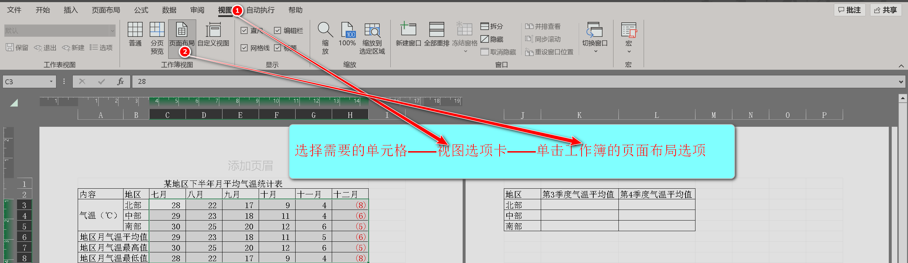
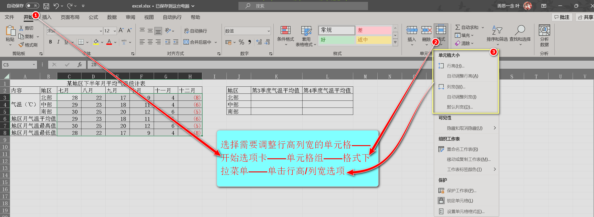
注意
- 设置单元格分为规定单位与未规定单位
- 规定单位:按上面步骤，依次完成
- 未规定单位：可以忽略视图选项卡切换到页面视图步骤[步骤依次是：选中单元格——开始菜单——格式下拉菜单——单击行高/列宽——设置参数——单击确定即可]
- 后续检查可能有0.01偏差(可以忽略)
-
条件格式图标集：选中需要添加图标的单元格(区域)——开始选项卡——样式组——条件格式下拉菜单——图标集——在右侧边栏选择(要求的图标集名称即可【悬停会显示名称】)
-
注意：
- 考试一般不需要自己自定义规则(也就是说：一定能找到官方定义的名称)
- 悬停会显示图标集对应的名称
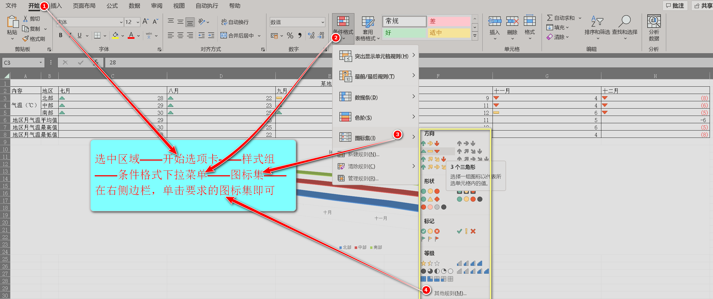
-
-
RANK.EQ函数：选中条件输出结果的单元格——公式选项卡——插入函数组——搜索需要的函数——确定弹出对话框——依次输入正确的参数——单击确定
-
RANK.EQ
- 该函数主要用于排名
- 语法：
=RANK.EQ(第一个数字,数字整列,逻辑值) - 使用公式之前：公式填在紧靠排名列的右边，与第一个值为一行
- 第一个数字：需要排名的列第一个数值(单元格地址)
- 数字整列：整个排名列的所有数字(单元格地址)——按F4改为绝对地址(一定要)
- 0为降序(从高到底)，1为升序(从低到高)，什么都不填默认0降序
-
-
图表布局设置：选中图表——图表设计选项卡——图表布局组——快速布局下拉菜单——按要求选择需要的布局即可
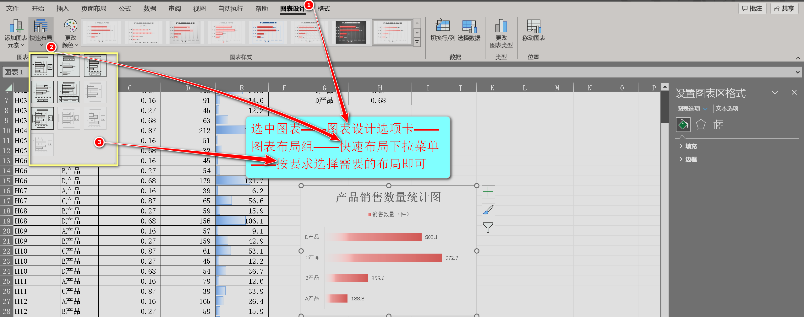
-
日期家族：选中条件输出结果的单元格——公式选项卡——插入函数组——搜索需要的函数——确定弹出对话框——依次输入正确的参数——单击确定
函数 作用 语法 示例（假设A1=2026/3/16） 注意事项 / 坑点 TODAY 返回当前日期 =TODAY()=TODAY()→ 当天日期每天自动更新，不能用于固定日期。 NOW 返回当前日期+时间 =NOW()=NOW()→ 当天日期+时间同 TODAY，自动更新，且包含时间。 YEAR 提取年份 =YEAR(日期)=YEAR(A1)→ 2026参数必须是有效日期；如果直接写数字会被解析为1900年后的天数。 MONTH 提取月份 =MONTH(日期)=MONTH(A1)→ 3同 YEAR，日期必须正确。 DAY 提取日 =DAY(日期)=DAY(A1)→ 16同 YEAR。 DATE 组合成日期 =DATE(年,月,日)=DATE(2026,3,16)→ 2026/3/16常用于将分开的年、月、日合并为真正的日期。 DATEDIF 计算两个日期的差（隐藏函数） =DATEDIF(开始日,结束日,单位)=DATEDIF(A1,TODAY(),"Y")→ 从A1到今天整年数单位： "Y"年，"M"月，"D"日，"YM"忽略年算月数差等。一级偶尔考。WEEKDAY 判断星期几 =WEEKDAY(日期,返回类型)=WEEKDAY(A1,2)→ 3（周二，若以周一为1）返回类型常用2（周一=1，周日=7）。一级考得少。 EDATE 加减月份 =EDATE(日期,月数)=EDATE(A1,3)→ 2026/6/16月数为正则往后，负则往前。 EOMONTH 返回指定月份的最后一天 =EOMONTH(日期,月数)=EOMONTH(A1,0)→ 2026/3/31月数0表示当月最后一天。 NETWORKDAYS 计算两个日期之间的工作日天数 =NETWORKDAYS(开始日,结束日,[假日])=NETWORKDAYS(A1, DATE(2026,3,31))→ 工作日天数考到算你运气好，了解即可。 -
删除重复项：选中需要要的单元格范围——数据选项卡——数据工具组——删除重复值——按要求选择列(是否包含标题[若没有要求直接默认])——最后单击确定即可
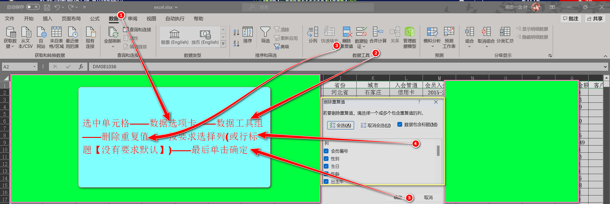
-
使用公式需要知道的
-
同一公式重复使用
在excel中，使用公式不需要一个一个输入(插入)，可以通过鼠标，向下拉到需要的位置。
步骤：鼠标移动至单元格右下角——当鼠标变为黑色十字架即是可以拖动——长按鼠标左键拖动到需要的位置即可(注意只能(一行/一列)同一方向拖动) -
三种引用方式对比
引用类型 写法示例 填充时的变化规律 核心用途 相对引用 =A1 完全变化
向下填充变=A2，
向右填充变=B1批量计算 绝对引用 =$A$1 完全不变
无论怎么填充，都指着A1引用固定值 混合引用 =$A1/=A$1 部分变化
$A1:行锁死，列变
A$1：行变，列锁死制作九九乘法表，跨表计算 -
采用公式的两种方法
- 通过公式选项卡插入公式组(自认为建议这种方法因为它会弹出输入参数的对话框，有效避免符号的限制(有时输入成中文，字符串不添加双引号……))
- 在单元格手动输入
-
请牢记引用方式的使用方法，它对于公式自动填充非常重要，输入公式的时候判断那个参数是固定不变的，判断后直接(F4)绝对定位，这样会有效避免错误填充问题
实在难找是否固定，保证正确率，多花点时间，一个一个公式输入(SUM一般不用考虑，直接拖动填充即可)
-
- 注意：当规定单元格数据格式为保留小数后几位时，不管当前数据有没有小数点，按步骤设置一遍
- 严格按照题目所规定的单元格路径操作
- 输入函数参数的时候，只能是英文字符，当是字符串/文本需要英文双引号包裹(若是使用插入函数组，弹出的对话框则不需要)
-
设置表标题:
双击图表标题编辑即可
- 移动图表到指定位置没有别的方法，靠眼睛仔细、对齐单元格地址、长按Alt键，再拖动图表，移动到指定位置，图表会自动吸附到单元格上
- 当规定图表(内显示数据标签)——在图表设计选项卡——图表布局组——添加图表元素下拉菜单——数据标签内的【居中】，】数据标签内】都可以，只要数据标签在里面就可以了
-
颜色查找在MS中，
·在主题色查找的名词有：主题色、着色、个性色
·在标准色查找的名词有：标准色、标准颜色
·图表设置颜色：彩色颜色()指的是：图表设计选项卡——图表样式组——更改颜色——按要求选择调色板型号即可（只需要记住彩色只在Excel图表出现，看到彩色联想调色板）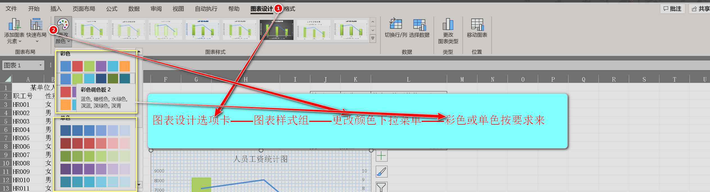
- 当需要选中全部的表格的时候，不需要按住鼠标拖动到结尾，只需要单击任意非空单元格，在使用快捷键:Alt+A,就可以一下选中全部单元格
-
在excel中，保留0为小数的操作有两个(注意：这非常重要,关乎是否能拿分)
-
使用设置单元格的方式
它可以当作是为了好看而设计的，它不会改变原有数值，会影响后面IF条件的判断
什么情况下用：
·保留小数0为整列，后面没有参与后续IF家族条件判断。
·所以正常情况就用设置单元格格式的方式。 -
通过公式ROUND(num，0)的方式
绝对整数，先四舍五入，后截断小数点后所有数，它改变原有的计算数值，避免后面IF条件判断的错误
什么情况下用：
后续要条件判断的时候(但也可以在原始数值上直接修约（如平均值列），视需求而定。更常见的用法是嵌套在IF中临时修约)
所以正确的用途是：嵌套在IF家族中，帮助IF家族进行判断。条件可能是(整数，小数点后N位…………)，通过它四舍五入的特性，会将条件判断错误情况无限接近于零。
最后总结：使用IF家族，就用ROUND，至于四舍五入到什么位置，看判断的条件(整数：=ROUND(num,0)，小数点第N位:=ROUND(NUM,N)，第N位整数:=ROUND(NUM,-N))
嵌套公式:=IF(ROUND(num,0)>=82, "A", "B") - IF、IFS的共同点：所有条件都只针对当前行，不会自动筛选其他行；条件可以涉及多个列（字段），但列必须与条件一一对应（即每个条件中引用的列是确定的）。
- 如果平均值是一列，且有条件 → 直接用 AVERAGEIF（单条件）或 AVERAGEIFS（多条件）。
·如果平均值是多列（比如 7、8、9 月都在同一行）→ 无脑用 AVERAGE 对每行求平均，然后下拉填充。
·记住：考试里基本就这两种情况，平均值是一列→用 AVERAGEIF/IFS；平均值是多列→无脑 AVERAGE。千万别混着用 - 所有函数，必须以题目要求为准
- 困难卷：八
难度不大(但推荐练的)：十
-